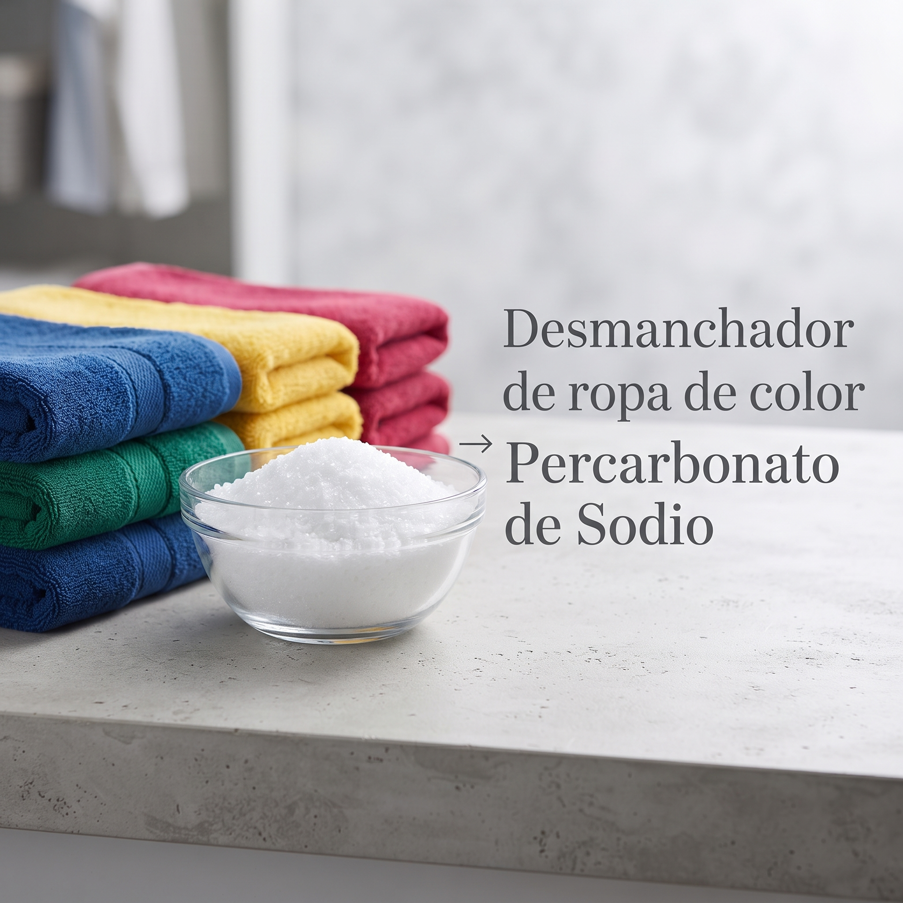
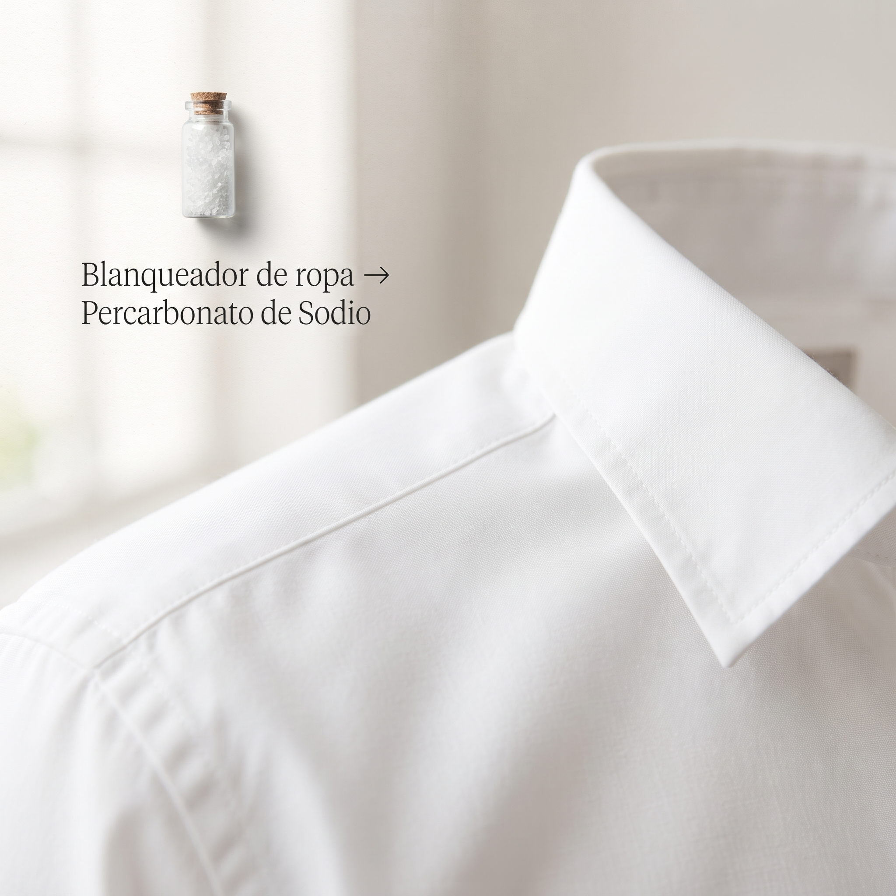
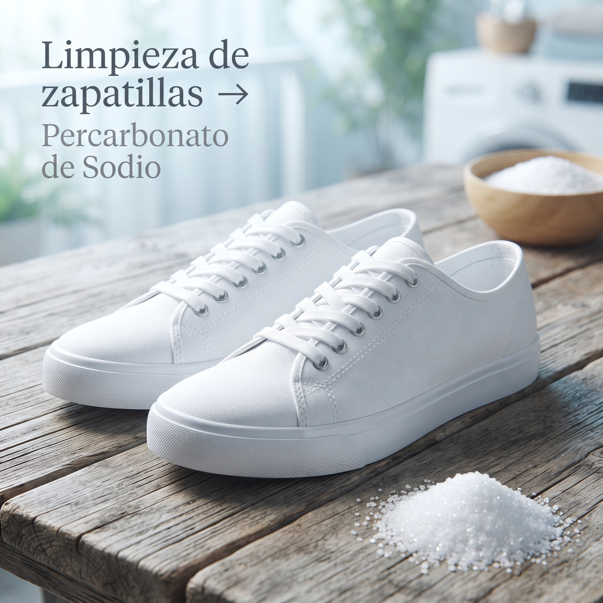

Guía práctica para el hogar
Percarbonato de sodio
Blanqueador y quitamanchas de oxígeno activo para ropa y textiles compatibles.

01 · Preparación
Dosis base para remojo
Disuelve el producto en agua tibia o caliente, idealmente entre 40 y 60 °C, si la etiqueta del tejido lo permite. Prepara la mezcla justo antes de usarla: pierde eficacia con el tiempo.
02 · Remojo
Ajusta el tiempo al tejido
| Tejido | Tiempo | Recomendación |
|---|---|---|
| Ropa blanca | 1–5 horas | Para manchas de sudor, amarilleo o suciedad antigua. |
| Ropa de color | 30–60 min | Prueba primero en una zona poco visible y añade detergente habitual. |
| Cortinas | 30–60 min | Usa agua a 40–60 °C solo si la etiqueta de cuidado lo permite. |

03 · Lavadora
Refuerza el lavado habitual
Añade 1–2 cucharadas directamente en el tambor.
Agrega el detergente habitual en su compartimento.
Elige un ciclo de 40–60 °C únicamente si la prenda y la lavadora lo permiten.

04 · Manchas localizadas
Pasta quitamanchas para textiles
Mezcla 1 cucharada con unas gotas de agua tibia hasta formar una pasta espesa.
Aplica sobre la mancha en un textil compatible y deja actuar de 10 a 20 minutos.
Frota suavemente con un cepillo blando y lava o enjuaga bien.

05 · Cuidado y seguridad
Uso, almacenamiento y emergencias
- Usa agua a 40–60 °C solo cuando el tejido lo admita y evita el contacto del polvo con los ojos.
- Guarda el producto seco, bien cerrado y fuera del alcance de niños y mascotas.
- Contacto con ojos o piel: enjuaga con abundante agua. Ingesta accidental: no induzcas el vómito; bebe agua y busca orientación médica. En niños o mascotas, contacta urgencias o un centro de toxicología con el envase a mano.